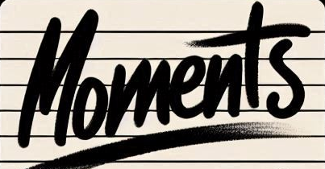

Photos and fragments
Shoot a frame or record five seconds of movement without leaving the app.
Active build / 007
A retro social camera built around a difficult question: can software look beyond polish and recognize the human weight inside a photograph?

The premise
007 / MOMENTSMost image ranking systems reward surface quality. Moments starts somewhere stranger and more human: warmth, tension, focus, atmosphere, continuity, and the residue that makes an ordinary scene feel worth keeping.
Every analysis remains explainable. The score is broken into visible dimensions, the original media stays private in the shared archive, and only the chosen handle and score metadata reach the community leaderboard.
Shoot a frame or record five seconds of movement without leaving the app.
Deterministic signals produce a score with dimensions and plain-language reasoning.
Supabase preserves the artifact while Render serves scoring and ranked community metadata.